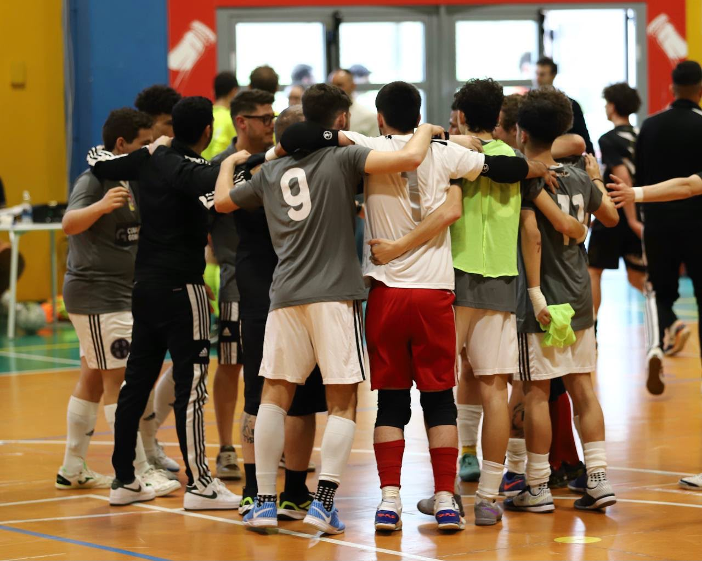

Parliamone
Contatti
Informazioni, collaborazioni o tesseramenti: siamo a disposizione.

Informazioni, collaborazioni o tesseramenti: siamo a disposizione.
Dove siamo
Società di futsal per sordi affiliata alla FSSI, con base a Lido di Noto (Siracusa).
La casa dei campioni
Sedute settimanali in palestra. Calendario gare FSSI e Deaf Champions League comunicato sui canali ufficiali.
Aggiornamenti, dietro le quinte e highlight delle partite sui profili social del club.